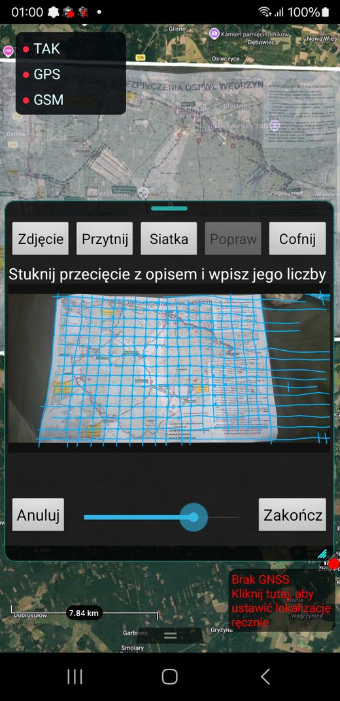
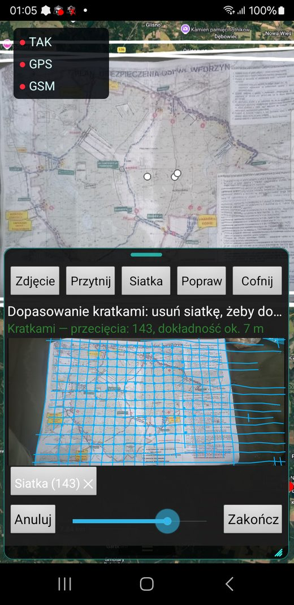
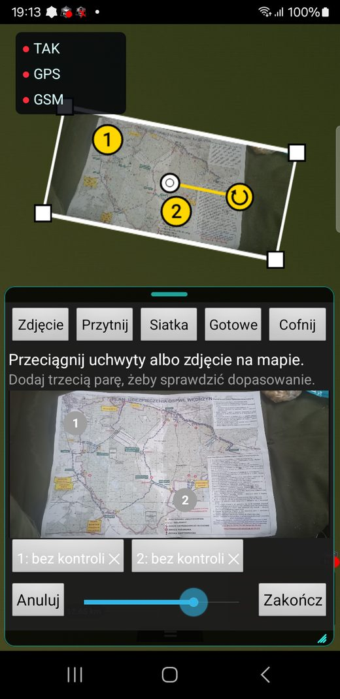

MapFit
ATAK-CIV 5.8 plugin
Places a photo of a paper map on the ATAK map. Point pairs are enough, or a single intersection of the kilometre grid.
Why it exists
A paper map from a briefing, a range plan or a photocopy with an MGRS grid holds data that ATAK does not have. The built-in Rubber Sheet tool can overlay a photo, but rotating and scaling it by hand takes long and ends up imprecise.
MapFit computes where the photo lies. The user taps a point on the photo and the same place on the map. From the second pair the plugin shows the photo on the map; from the third it reports a control error in metres for every pair.
Grid mode
When the photo has a kilometre grid, the plugin detects the line intersections itself, offline and without machine learning. The user taps one intersection and types its two-digit labels from the map margin. Every detected intersection becomes a point pair.
A folded sheet is fitted cell by cell. On a plan of the Wędrzyn training area, photographed with a phone, it found 143 intersections and the median error at control points was 20 m.
Manual adjustment
Handles on the map move, rotate and scale the photo after the fit. When the user finishes, the photo stays in ATAK as an ordinary Rubber Sheet overlay.
What it taught me
The first grid detector, tuned on two photos, returned a wrong scale without any warning once the photo was scaled slightly. A guard on cell density and a separate trial on 92 photos fixed that.
Screenshots


